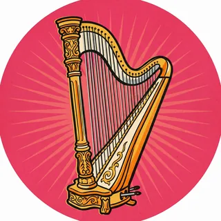
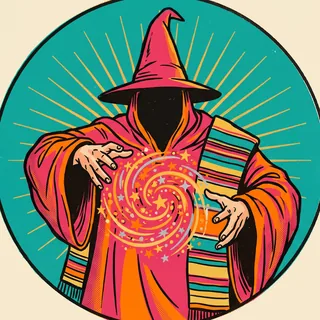
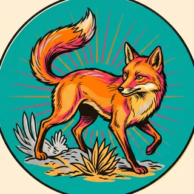
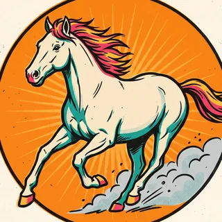
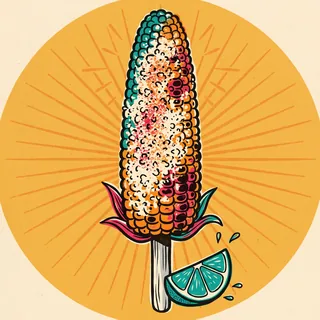

🎲 How to read this
The eight players getting the most minutes, each with points and their most notable other stat. Every market has two lines, both at the half point so there are no pushes. Tonight's Board sets its line at the player's typical night this season and adjusts for the next opponent. Ahead of Last Year? uses last season's average and shows how sure we can be about each hit rate. These are not sportsbook odds. For fun and analysis, not betting advice.
🎯 Tonight's Board · @ CHI
Wednesday, Nov 11 · 7:00 PM CT · United Center, Chicago
The line is the half point beside his season median that splits his games closest to 50/50. Tonight est. is that median scaled by the pace change and, for points, by the opponent's defense. Defense is pulled toward league average until about 10 games are in, as in the Next Game projection. Last 5 and Road count games over the line.
| Player | Stat | Line | Tonight est.Tonight | Last 5 | Road |
|---|---|---|---|---|---|
 Dylan Harper |
PointsPTS | 18.5median 18 | 19.3+1.3 from matchup | 2/5 | 2/5 |
| Dylan Harper | AssistsAST | 4.5median 4 | 4.1+0.1 from matchup | 1/5 | 1/5 |
 Devin Vassell |
PointsPTS | 11.5median 11 | 11.8+0.8 from matchup | 2/5 | 3/4 |
| Devin Vassell | 3-Pointers Made3PM | 1.5median 1 | 1.0+0.0 from matchup | 2/5 | 2/4 |
| Victor Wembanyama | PointsPTS | 29.5median 29 | 31.2+2.2 from matchup | 3/5 | 3/5 |
| Victor Wembanyama | BlocksBLK | 4.5median 4 | 4.1+0.1 from matchup | 2/5 | 1/5 |
 De'Aaron Fox |
PointsPTS | 13.5median 14 | 15.0+1.0 from matchup | 1/5 | 3/5 |
| De'Aaron Fox | AssistsAST | 6.5median 6 | 6.2+0.2 from matchup | 0/5 | 1/5 |
| Stephon Castle | PointsPTS | 15.5median 15 | 16.1+1.1 from matchup | 3/5 | 2/5 |
| Stephon Castle | 3-Pointers Made3PM | 2.5median 2 | 2.1+0.1 from matchup | 0/5 | 1/5 |
| Julian Champagnie | PointsPTS | 8.5median 8 | 8.6+0.6 from matchup | 2/5 | 3/5 |
| Julian Champagnie | 3-Pointers Made3PM | 2.5median 2 | 2.1+0.1 from matchup | 2/5 | 3/5 |
 Keldon Johnson |
PointsPTS | 8.5median 8 | 8.6+0.6 from matchup | 2/5 | 2/5 |
 Luke Kornet |
PointsPTS | 2.5median 2 | 2.1+0.1 from matchup | 2/5 | 1/5 |
📈 Ahead of Last Year?
How often each player has cleared last season's average this season. The bar shows where his true hit rate plausibly sits given the games so far; the line through it is 50%. A read of Over or Under needs the whole range on one side of 50%.
| Player | Stat | Last-season lineLine | This season ± 1σ | Over | 95% rangeRange | Read |
|---|---|---|---|---|---|---|
| Dylan Harper | PointsPTS | 11.5 | 18.0 ± 3.9 | 11/11 (100%) | 74%–100% | Over |
| Dylan Harper | AssistsAST | 3.5 | 4.4 ± 2.5 | 7/11 (64%) | 35%–85% | Too close |
| Devin Vassell | PointsPTS | 14.5 | 11.9 ± 5.6 | 3/10 (30%) | 11%–60% | Too close |
| Devin Vassell | 3-Pointers Made3PM | 2.5 | 1.6 ± 1.7 | 2/10 (20%) | 6%–51% | Too close |
| Victor Wembanyama | PointsPTS | 24.5 | 30.1 ± 12.3 | 8/11 (73%) | 43%–90% | Too close |
| Victor Wembanyama | BlocksBLK | 3.5 | 4.4 ± 2.4 | 6/11 (55%) | 28%–79% | Too close |
| De'Aaron Fox | PointsPTS | 18.5 | 13.9 ± 4.5 | 3/11 (27%) | 10%–57% | Too close |
| De'Aaron Fox | AssistsAST | 6.5 | 5.9 ± 2.0 | 4/11 (36%) | 15%–65% | Too close |
| Stephon Castle | PointsPTS | 16.5 | 14.3 ± 6.8 | 4/11 (36%) | 15%–65% | Too close |
| Stephon Castle | 3-Pointers Made3PM | 1.5 | 2.0 ± 1.5 | 7/11 (64%) | 35%–85% | Too close |
| Julian Champagnie | PointsPTS | 11.5 | 10.1 ± 6.5 | 4/11 (36%) | 15%–65% | Too close |
| Julian Champagnie | 3-Pointers Made3PM | 2.5 | 2.8 ± 2.0 | 5/11 (45%) | 21%–72% | Too close |
| Keldon Johnson | PointsPTS | 12.5 | 7.8 ± 4.3 | 2/11 (18%) | 5%–48% | Under |
| Luke Kornet | PointsPTS | 6.5 | 3.1 ± 2.8 | 2/11 (18%) | 5%–48% | Under |